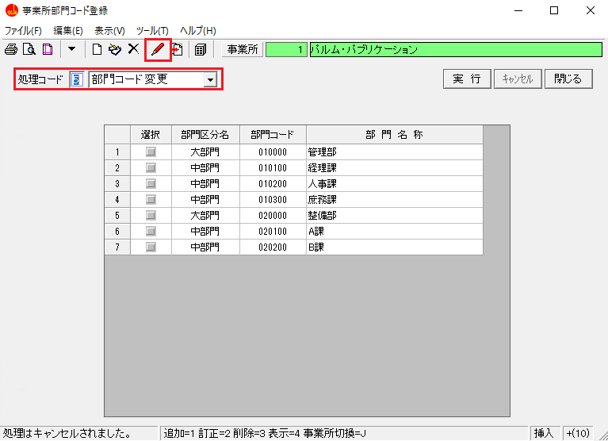

目 次
✖
目 次
１-１ 年調・社保・労保型手入力を実行する
賃金管理メニューより年調・社保・労保型手入力を実行します。
１-２ 入力画面設定画面で設定を行う
賃金台帳手入力画面の入力を行う上で必要となる設定を行います。
{kind=link}
１-３ 賃金台帳（賃金管理）を入力する
賃金データ入力の手順についてポイントを説明します。
年調実施型の場合
{kind=link}
｜ポイント｜
① 連続入力にチェックを付けると、各社員の賃金データを連続で入力することができます。
｜手順｜
１.連続入力にチェックを付ける
{kind=link}
２.処理コードを「賃金データ入力」に設定して実行ボタンをクリック、又は をクリックする
をクリックする
３.入力状態になっていることを確認し、賃金データを入力する
{kind=link}
４.完了ボタンを１回クリックすると、画面が確認状態になることを確認し、画面の確認ができたらもう１度完了ボタンをクリックする
{kind=link}
５.次の社員に切り替わっていることが確認できます。
※ チェックボックスは、いつでもチェックを付けたり外したりすることができます。
② 各項目について
合計欄
{kind=link}
支給額合計・社会保険料合計・賞与社会保険料合計などは、自動計算される項目です。
雇用形態～短時間労働者
{kind=link}
{kind=link}
{kind=link}
社保雇用型の場合
{kind=link}
{kind=link}
{kind=link}
{kind=link}
{kind=link}
労保専用型の場合
{kind=link}
{kind=link}
{kind=link}
{kind=link}
その他
{kind=link}
１-４ 賃金台帳（賃金管理）を削除する
賃金台帳（賃金管理）を削除する手順について解説します。
{kind=link}
{kind=link}
｜ポイント｜
① 表示開始月
この欄で指定した月度より１２ヶ月分の賃金データが表示されます。
② 入力順
画面に表示する社員の順番を、何を基準にするか指定します。
｜ポイント｜
部門,部門内連番順を選択したら、特定の人が表示されない場合に、原因として部門内連番が重複していたということがあります。
事業所情報管理メニューの「部門コード登録」から部門コードを変更してください。
③ 小数点以下桁数 設定
所定労働の日数、労働日数、休日労働の日数、特別休暇の日数、欠勤日数を何桁まで表示するかを０～４桁の範囲内で指定できます。
｜ポイント｜
給与項目設定で、日数の小数点以下の桁数を設定している場合に、賃金管理データの日数の桁数 を合わせます。給与項目設定で、小数点以下桁数が設定されているのに、賃金管理データ作成時に小数点以下 桁数が設定されていない場合は、自動的に丸められてしまいます。
※ 小数点以下を（多桁→少桁に）変更するとデータの内容も指定の桁数にまるめられ元の値には戻りませんので、ご注意ください。
④ 半日有給休暇（0.5日）の使用状況
有給時間を日で入力した有給日数のデータがあった場合の、変換方法を選択します。
a)「半日有給休暇を使用する」を選択した場合
例．１．６２５の場合 １．５日と１時間で入力します
b)「半日有給休暇を使用しない」を選択した場合
例．１．６２５の場合 １．０日と５時間で入力します